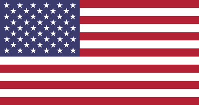

Nils Anderson
À propos de moi
Bonjour ! Je suis Nils Anderson, étudiant en deuxième année de BUT Science des Données à Paris.
Passionné des chiffres, j'adore analyser des données pour en tirer des informations pertinentes. Cette passion a commencé avec les jeux-vidéo, mais je me suis vite aperçu que je pouvais appliquer ces compétences en dehors des jeux! Par exemple, en suivant et analysant mon quotidien (alimentation, humeur, et plus), j'ai pu identifier ce qui influençait ma santé. Par conséquent, j'ai changé mes habitudes pour un mode de vie plus sain. C'est ce qui me motive à étudier les données : elles permettent d'optimiser bien plus de choses au quotidien!
En dehors des données, je suis passioné par la création de vidéos. L'écriture, le storytelling, et le montage vidéo permettent ensemble de raconter une histoire captivante, puis le design sonore vient rajouter de l'émotion pour toucher le spectateur.
Ce processus de création a une chose en commun avec les données: dans les deux cas, il s'agit de présenter des éléments de manière claire et éloquente. Le design graphique doit servir à la clarté et à la compréhension des données.
Compétences
Programmation et manipulation de données
 Python (pandas, NumPy, matplotlib)
Python (pandas, NumPy, matplotlib) RStudio (ggplot2, dplyr)
RStudio (ggplot2, dplyr) SAS
SAS SQL
SQL
Analyse et datavisualisation
 Excel, Google Sheets, LibreOffice
Excel, Google Sheets, LibreOffice- RStudio
 Datawrapper
Datawrapper
Langues
 Français (C2)
Français (C2)
Anglais (C2)
 Suédois (B1)
Suédois (B1)
 Espagnol (B1)
Espagnol (B1)
Qualités
Résolution de problèmes
Esprit d'analyse
Communication & storytelling grâce aux données
Vulgarisation, explication en termes simples